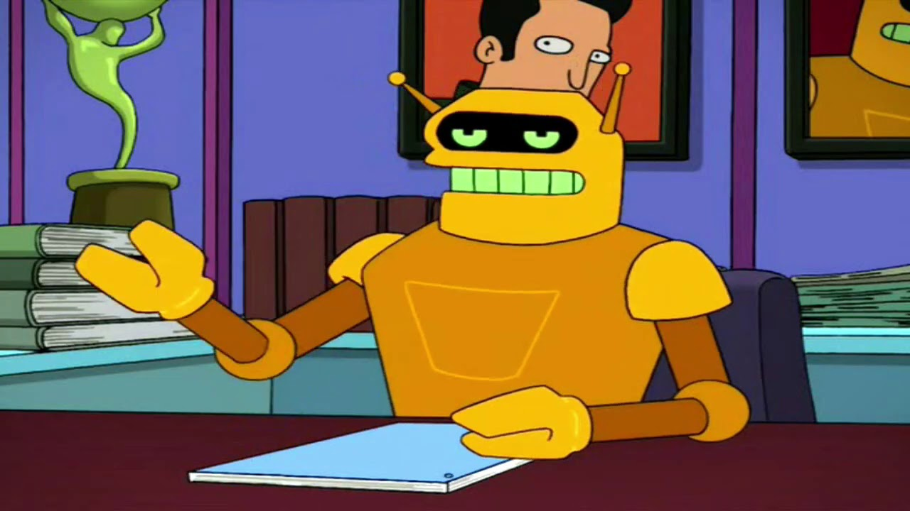

Este presentador automatizado da las noticias de la forma mas hilarante nunca antes vista. Viste el comercial o sketch de "MAD" de canal FOX? s algo similar pero enfocado a noticias de contexto de la universidad UNSAAC y su entorno. haha preparate para ser informado como nunca antes!.
Porqué nos necesitas?
Hoy en dia los jovenes cada vez menos ven las noticias del pais o su entorno como universidad o region; y otra obstruccion es la poca confiabilidad en los noticieros del pais ya que estos dices sus propias opiniones y estan dirigidos por sus gefes y en otros casos solo publican noticias inservibles. Es asi que nació PRESENTA BOT un noticiero enfocado en jovenes que dice las noticias coyunturales sin ningun sesgo politico y mas bien le agrega su toque personal. Salu2 .